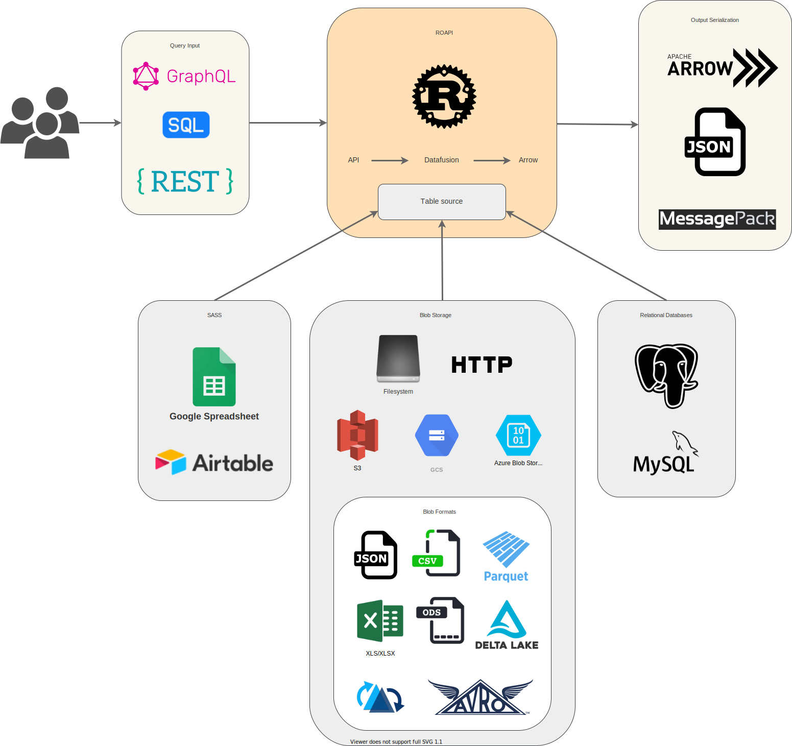

ROAPI Documentation
ROAPI automatically spins up read-only APIs for static datasets without requiring you to write a single line of code. It builds on top of Apache Arrow and Datafusion. The core of its design can be boiled down to the following:
- Query frontends to translate SQL, GraphQL and REST API queries into Datafusion plans.
- Datafusion for query plan execution.
- Data layer to load datasets from a variety of sources and formats with automatic schema inference.
- Response encoding layer to serialize intermediate Arrow record batch into various formats requested by client.
See below for a high level diagram:
Installation
Build from source
You need to install Rust toolchain if you haven't done so.
cargo install --git https://github.com/roapi/roapi --branch main --bin roapi-http
Docker
A prebuilt docker image is also available at ghcr.io/roapi/roapi-http.
Quick start
Spin up APIs for test_data/uk_cities_with_headers.csv and
test_data/spacex-launches.json:
roapi-http \
--table 'uk_cities:test_data/uk_cities_with_headers.csv' \
--table 'spacex_launches:test_data/spacex-launches.json'
Or using prebuilt docker image:
docker run -t --rm -p 8080:8080 ghcr.io/roapi/roapi-http:latest --addr 0.0.0.0:8080 \
--table 'uk_cities:test_data/uk_cities_with_headers.csv' \
--table 'spacex_launches:test_data/spacex-launches.json'
Query API
Query tables using SQL, GraphQL or REST:
curl -X POST -d "SELECT city, lat, lng FROM uk_cities LIMIT 2" localhost:8080/api/sql
curl -X POST -d "query { uk_cities(limit: 2) {city, lat, lng} }" localhost:8080/api/graphql
curl "localhost:8080/api/tables/uk_cities?columns=city,lat,lng&limit=2"
Sample response:
[
{
"city": "Elgin, Scotland, the UK",
"lat": 57.653484,
"lng": -3.335724
},
{
"city": "Stoke-on-Trent, Staffordshire, the UK",
"lat": 53.002666,
"lng": -2.179404
}
]
See Query frontends for details on different operators supported by each frontend.
Schema API
Get inferred schema for all tables:
curl localhost:8080/api/schema
Sample response:
{
"uk_cities": {
"fields": [
{
"name": "city",
"data_type": "Utf8",
"nullable": false,
"dict_id": 0,
"dict_is_ordered": false
},
{
"name": "lat",
"data_type": "Float64",
"nullable": false,
"dict_id": 0,
"dict_is_ordered": false
},
{
"name": "lng",
"data_type": "Float64",
"nullable": false,
"dict_id": 0,
"dict_is_ordered": false
}
]
}
}
Config
Command line argument
You can configure ROAPI to load as many tables as you want by repeating the --table argument.
YAML config
You can configure multiple table sources using YAML config, which supports more advanced format specific table options. For example:
addr: 0.0.0.0:8084
tables:
- name: "blogs"
uri: "test_data/blogs.parquet"
- name: "ubuntu_ami"
uri: "test_data/ubuntu-ami.json"
option:
format: "json"
pointer: "/aaData"
array_encoded: true
schema:
columns:
- name: "zone"
data_type: "Utf8"
- name: "name"
data_type: "Utf8"
- name: "version"
data_type: "Utf8"
- name: "arch"
data_type: "Utf8"
- name: "instance_type"
data_type: "Utf8"
- name: "release"
data_type: "Utf8"
- name: "ami_id"
data_type: "Utf8"
- name: "aki_id"
data_type: "Utf8"
- name: "spacex_launches"
uri: "https://api.spacexdata.com/v4/launches"
option:
format: "json"
- name: "github_jobs"
uri: "https://jobs.github.com/positions.json"
To run serve tables using config file:
roapi-http -c ./roapi.yml
Dataset formats
JSON
When a table uri ends in .json, ROAPI will try to load it as JSON table if no
format option is specified:
tables:
- name: "mytable"
uri: "http://mytable.json"
Filter by JSON pointer
Sometimes the JSON array you want to serve might be stored inside a JSON object. To support this use-case, ROAPI supports loading JSON using a JSON pointer.
Take the following JSON data as an example:
{
"x": {
"y": [{"col1": "z"}, {"col1": "zz"}]
}
}
In order to only serve [{"col1": "z"}, {"col1": "zz"}] through ROAPI, you can
configure the JSON table source as:
tables:
- name: "mytable"
uri: "http://mytable.json"
option:
format: "json"
pointer: "/x/y"
Array encoding
Each row in JSON data can be encoded using array for size reduction. This convention allows us to avoid repeating column names in every row.
For example:
[
{"col1": 1, "col2": "abc"},
{"col1": 2, "col2": "efg"}
]
Can be stored as:
[
[1, "abc"],
[2, "efg"]
]
When loading JSON rows using array encoding, one needs to explicily specify the schema since there is no column name in the datasource anymore for ROAPI to perform the schema inference:
tables:
- name: "mytable"
uri: "http://mytable.json"
option:
format: "json"
array_encoded: true
schema:
columns:
- name: "col1"
data_type: "Int64"
- name: "col2"
data_type: "Utf8"
Parquet
When a table uri ends in .parquet, ROAPI will try to load it as Parquet table if no
format option is specified:
tables:
- name: "mytable"
uri: "http://mytable.parquet"
You can partition a Parquet dataset into multiple partitions and load all of them into a single table by directory path:
tables:
- name: "mytable"
uri: "./table_dir"
option:
format: "parquet"
CSV
When a table uri ends in .csv, ROAPI will try to load it as CSV table if no
format option is specified:
tables:
- name: "mytable"
uri: "http://mytable.csv"
You can partition a CSV dataset into multiple partitions and load all of them into a single table by directory path:
tables:
- name: "mytable"
uri: "./table_dir"
option:
format: "csv"
Google spreadsheet
To serve a Google spreadsheet as API, you need to gather the following config values:
- Google spreadsheet URL
- Google spreadsheet sheet title (bottom of the spreadsheet UI)
- Service account secret key
Here are the steps to configure the service account:
- Activate the Google Sheets API in the Google API Console.
- Create service account: https://console.developers.google.com/apis/api/sheets.googleapis.com/credentials.
- Go into service account setting and click
ADD KEY. Then select JSON format and save it somewhere safe. - Go back to Google spreadsheet and share it with the newly created service account through service account email).
ROAPI config to load the google spreadsheet as data source:
tables:
- name: "table_name"
uri: "https://docs.google.com/spreadsheets/d/1-lc4oij04aXzFSRMwVBLjU76s-K0-s6UPc2biOvtuuU#gid=0"
option:
format: "google_spreadsheet"
application_secret_path: "path/to/service_account_key.json"
sheet_title: "sheet_name_within_google_spreadsheet"
Blob store
ROAPI currently supports the following blob storages:
- Filesystem
- HTTP/HTTPS
- S3 (WIP)
Filesystem
Uri without a scheme prefix is treated as filesystem backed data source by
ROAPI. For example, to serve a local parquet file test_data/blogs.parquet, you
can just set the uri to the file path.
Filesystem store supports loading partitioned tables. In other words, you can split up the table into mulitple files and load all of them into a single table by setting uri to the directory path.
HTTP/HTTPS
ROAPI can build tables from datasets served through HTTP protocols. However, one thing to keep in mind is HTTP store doesn't support partitioned datasets because there is no native directory support in HTTP.
API
Query frontends
SQL
To query tables using a subset of standard SQL, send the query payload through
POST request to /api/sql endpoint. This is the only query interface that
supports table joins.
SQL query frontend is the more flexible and powerful compared to REST and GraphQL. It is the only query frontend that supports table joins.
REST
Query tables through REST API by sending GET requests to
/api/tables/{table_name}. Query operators are specified as query params.
REST API currently supports the following query operators:
- columns
- sort
- limit
- filter
To sort column col1 in ascending order and col2 in descending order, set
query param to: sort=col1,-col2.
To find all rows with col1 equal to string 'foo', set query param to:
filter[col1]='foo'. You can also do basic comparisons with filters, for
example predicate 0 <= col2 < 5 can be expressed as
filter[col2]gte=0&filter[col2]lt=5.
GraphQL
To query tables through GraphQL, send the query through POST request to
/api/graphql endpoint.
GraphQL query interface supports the same set of operators supported by REST API. Here how you can apply various operators to your query:
{
table_name(
filter: {
col1: false
col2: { gteq: 4, lt: 1000 }
}
sort: [
{ field: "col2", order: "desc" }
{ field: "col3" }
]
limit: 100
) {
col1
col2
col3
}
}
Schema
TODO
Response serialization
By default, ROAPI encodes responses in JSON format, but you can request
different encodings by specifying the ACCEPT header:
curl -X POST \
-H 'ACCEPT: application/vnd.apache.arrow.stream' \
-d "SELECT launch_library_id FROM spacex_launches WHERE launch_library_id IS NOT NULL" \
localhost:8080/api/sql